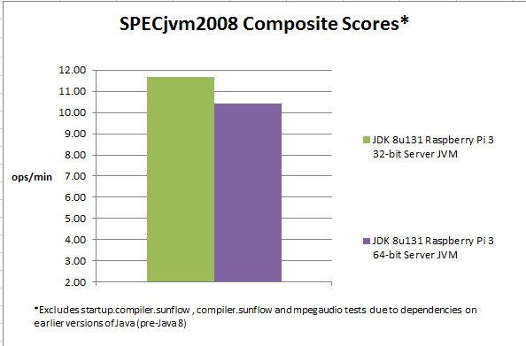

Updates to Java Serial Communications, Raspberry Pi 3
By Jim Connors - 18 May 2017
Why not kill a few birds with one
stone? First, it was high time to finally learn how to
post an article with our new blogging platform
(based on Oracle Content Marketing).
Second, and this is of course relative to my little world, it would
be useful to provide an update to one of my more
historically read topics dealing with serial communications and
Java.
A recent comment to one of the Java Serial Port Communications posts
mentions difficulty with using the provided RxTx shared object for
the ARMv7l architecture. So I figured I'd rebuild it
taking advantage of some new hardware. The Raspberry Pi 3 represents the first
64-bit ARM offering from the Raspberry Pi Foundation, and can be
ultimately utilized to build both 32 and 64-bit binaries.
Although currently most work on this device is done in 32-bit mode,
there are some 64-bit environments available. For the 32-bit
ARMv7l environment we'll use the ubiquitous Raspbian Jessie distribution. And for
our 64-bit AArch64 instance we'll use OpenSuSE LEAP 42.2.
To understand the history of this topic, you can take a look at the
following past posts:
RxTx code has not always been readily available, so to improve upon
that, you can now go to https://github.com/jtconnors/rxtx-2.1-7r2
and pull down the source (including the modifications needed to
build for Java versions 6 though 8). Additionally, another
repository has been created at https://github.com/jtconnors/rxtx-2.1-7r2-binaries to
keep compiled binaries for the native shared objects associated
with RxTx for popular embedded platforms. If you create
subsequent binaries for additional platforms, I'd be glad to
add them.
Finally, while playing around with both 32 and 64-bit variants, I
thought it might be useful to run the SPECjvm2008 benchmark to see
how Java performance differs between the architectures.
One of the primary advantages of a 64-bit JVM is its ability to
support much larger heap sizes. The usefulness of a 64-bit JVM
on a Raspberry Pi 3 is certainly debatable, considering it only
has 1GB of RAM, nonetheless it would be interesting to see what
overhead might be incurred using the 64-bit JVM.

Although results of individual components of the benchmark do
vary, overall it looks like the 64-bit JVM does incur some
(hopefully acceptable) overhead.